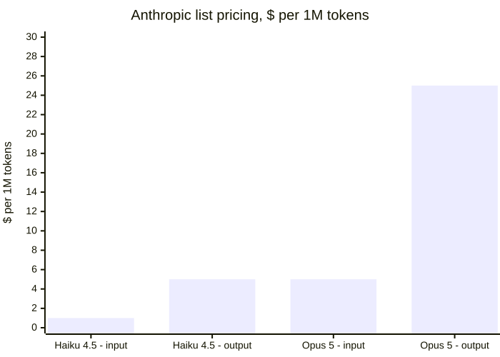

2 — The bread and butter: script vs. subagent
Why ask a subagent to burn tokens doing the same mechanical task a hundred times, when spending tokens once on a script would do it for free forever?
This is the part of tokenmaxxing that has nothing to do with leaderboards or judgment calls. It's plumbing. And the default has quietly gone backwards: reaching for a model — even a cheap one — has become the first instinct for deterministic, repeatable work, when a script has zero marginal cost and no round-trip. Every LLM call is metered and adds latency. A for-loop is neither.

The subagent path pays every time. The script path pays once, then never again.
There's a name for this now: "The Plausibility Trap," a paper from January 2026 that describes exactly this failure mode — a probabilistic engine applied to a task that was deterministic all along. Its headline number is a roughly 6.5x latency penalty for routing deterministic work through a model instead of code, and it goes further than naming the problem — it proposes an actual framework for deciding when not to reach for a model in the first place, which is the more useful half of the paper.
The cost math backs it up before you even get to the multiplier of "asked a hundred times instead of once." Anthropic's own pricing lists Haiku at $1 per million input tokens and $5 per million output tokens; Opus is $5 and $25. That's a 5x jump for one tier up the capability ladder — before you've decided whether the task needed a subagent call at all, let alone which one.

One tier up is a 5x jump on its own. Multiply that by "called every time instead of written once" and the gap compounds fast.
There's a second cost underneath the dollar figure, and it's harder to put on an invoice: what happens to your own judgment when you hand a deterministic task to a model out of habit rather than necessity. A CHI 2025 study out of Microsoft Research and Carnegie Mellon — peer-reviewed, n=319 — found that higher trust in AI output correlated with less critical engagement with that output. You can hold that finding without reaching for the more viral one: MIT Media Lab's "Your Brain on ChatGPT" gets cited constantly, but the authors themselves flag it as preliminary and unreviewed, on a sample of 54 people. The Microsoft/CMU result is the one built to survive scrutiny, and it says the same thing with less drama — delegate the boring stuff without thinking about it, and the "without thinking about it" part doesn't stay contained to the boring stuff.
Thoughtworks' Technology Radar made the same call structurally in its April 2026 edition: stop treating "call the frontier model" as the default first step in a pipeline. Often the actual bottleneck is a slow database call or a missing index, not a reasoning gap, and no amount of model capability fixes a problem that was never a reasoning problem.
A concrete example from my own week: an agent that used to be asked, every single run, to go check whether a given endpoint's response shape had drifted from its schema. Same input format, same comparison, same pass/fail output, dozens of times a day. That's not a reasoning task wearing a disguise — it's a five-line schema diff that got promoted to a model call because writing the prompt felt faster than writing the script, once. It wasn't faster the fiftieth time.
None of this is an argument against subagents — they're the right tool for exactly what they're good at: judgment, synthesis, anything where the input varies enough that hard-coding the logic would be its own maintenance burden. The rule is narrower than "use less AI." It's: if you're about to ask a model to do the identical thing more than a couple of times, you're not looking at a prompt anymore. You're looking at a script that hasn't been written yet.
The tell is almost always the same shape: fixed input format, fixed comparison logic, fixed output. If you can describe the task without using the word "judge," "decide," or "figure out," it's a script. If you catch yourself writing the same prompt twice with only the filename changed, stop and write the fifteen lines of code instead — you'll have it forever, it won't hallucinate, and it won't show up on next month's token bill. Spend the tokens once, on the thing that pays for itself.